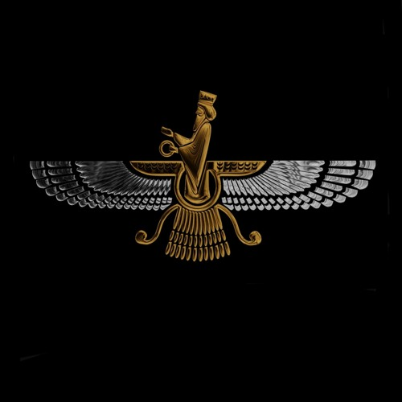
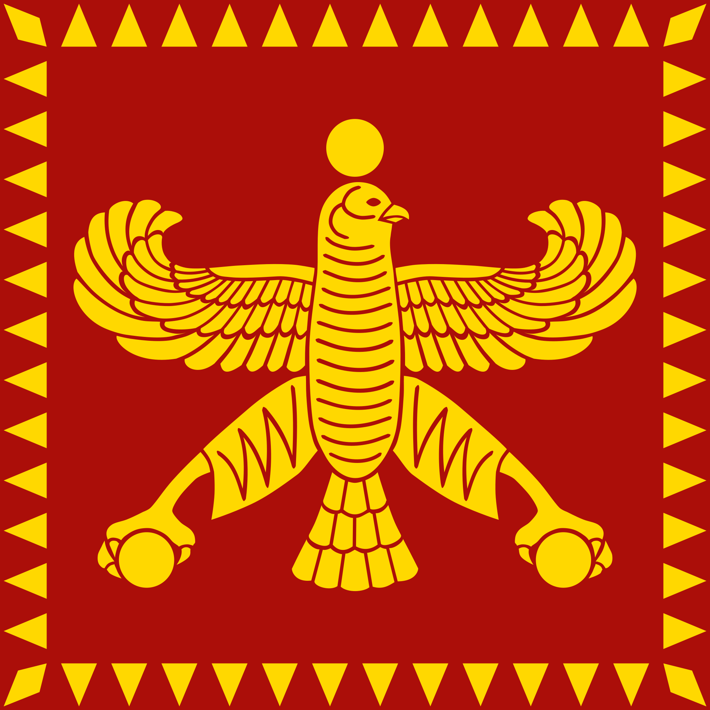
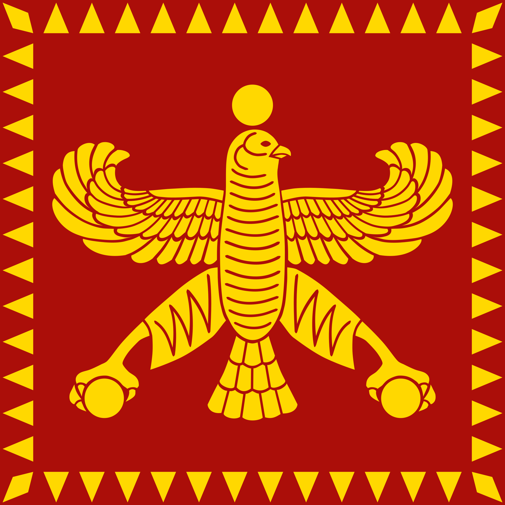

The biggest dynasty in the whole world!
Cyrus the Great was the founder of the Achaemenian Empire. His empire, stretching from the Aegean Sea to the Indus River, was the largest that had ever existed at the time of his rule.
 

The Achaemenid Empire or Achaemenian Empire,[16] also known as the First Persian Empire[17] (/əˈkiːmənɪd/; Old Persian: 𐎧𐏁𐏂, Xšāça, lit. 'The Empire'[18] or 'The Kingdom'[19]) was the ancient Iranian empire founded by Cyrus the Great of the Achaemenid dynasty in 550 BC. Based in modern-day Iran, it was the largest empire the world had ever seen at its time, spanning a total of 5.5 million square kilometres (2.1 million square miles).

After Achaemenid, the best kingdom in Iran was Pahlavi